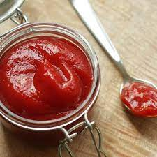

Bangladeshi Thai Soup
This has to be our all time favorite dish! Reminiscing old
memories with the popular Bangladeshi Thai Soup. Enjoy
this hot and delicious soup alongside hot crispy wontons.
Ingredients
- Oil-

- Chicken breast sliced-

- Shripms chopped-
- Ginger paste-
- Garlic paste-
- Chilli paste-

- Ketchup- 
- Soy Sauce-
- Salt-
- Vineger-
- Sugar-
- Egg-

- Corn Starch-

- Water (room temperature)-

- Chicken Stock-
- Gelangal/Chinese Ginger-
- Lemongrass 1 stick cut out in 2 inch size-
- Stick cut out in 2 inch size-
- Green chilli sliced-

- Lemon juice-
- Black pepper-

Direction
- Heat 1 tsp of oil in a pan over medium heat.
- Add ginger paste, garlic paste, chilli paste, vineger and
sliced Chicken pieces.Add salt to taste and saute
for a couple minutes (add water if needed to saute).
- Add ketchup, sugar, soy sauce, chopped shripms and
continue to cook for 5 minutes.
- Remove from heat and set aside.
- In a deep skillet or saucepot, add 6 cups of room temperature water.
Do not turn on heat as we need to
mix everything together before cooking it.
- In a separate bowl, add 3 tbsp of water and stir in
corn starch. Add an egg and mix everything well, be
sure to have no lumps. Add the egg mixture to the
water and mix well.
- Continue to stir and mix everything, this step is
important to adjust the temperature of egg mixture. If
not mixed well, the egg will break apart and the soup
maybe clotted and not smooth.
- Turn on heat to low-meedium temperature and add in
lemongrass pieces and galangal ginger slices.Cook
for 5 minutes at low heat, stirring continuously.
- Add 1 cup chicken stock and chicken-shrimp mixture
into the soup.Cook for 10 minutes at medium heat,
stirring continuously.
- Add green chilli, black pepper and 2 tbsp of
lemon juice.Cook until the soup has reached the desired
consistency.
- Remove from heat and serve immediately.
Serve hot alongside hot crispy wontons. Enjoy!
Work By- Tahsinur Rahman